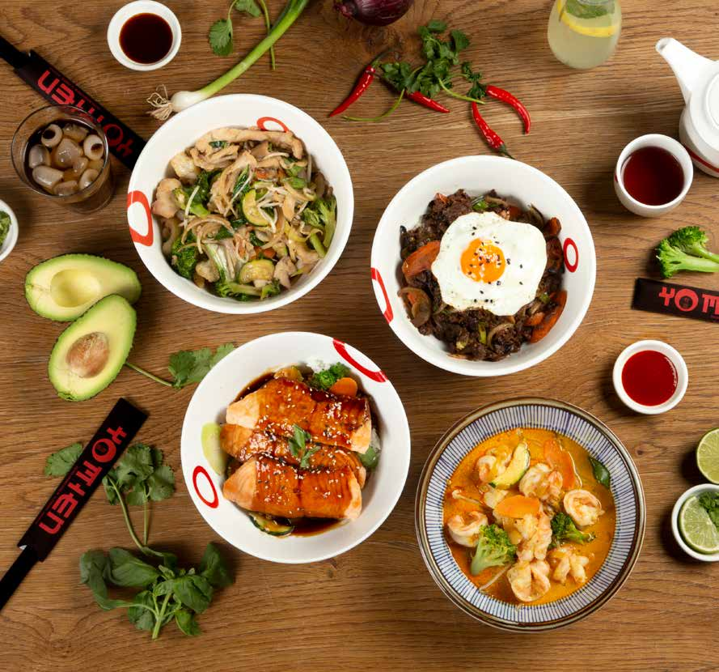
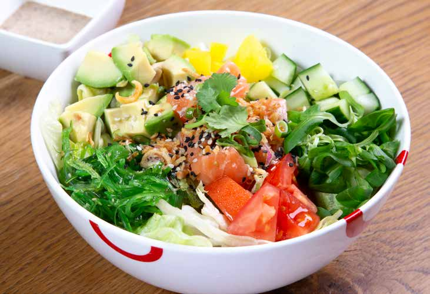

LA MIEN [laa miaehn]
Fliegende Nudeln aus Weizenmehl, serviert mit Pakchoi und Koriander.


Restaurant · Wien
YO MIEN
Die Abendkarte enthält zusätzliche Vorspeisen, Dim Sum, gebratene Nudeln, Udon, Currygerichte, Hauptspeisen und Desserts.
Lunch
noodle soups

Fliegende Nudeln aus Weizenmehl, serviert mit Pakchoi und Koriander.
Kokos-Curry Suppe mit handgehobelten Nudeln.
Vietnamesische Reisbandnudelsuppe mit Sojasprossen, Koriander und Limette.
rice bowls
fried noodles
fresh bowls

Dinner
Chinesische Teigtaschen, gefüllt mit Garnelen und Schweinefleisch
Scharfe Wantan mit Garnelen und Schweinefleisch
Garnelensuppe mit Kokosmilch
Vietnamesische Sommerrollen
Knusprige Frühlingsrollen
Kleine knusprige Frühlingsrollen
Gedämpfte Teigtaschen mit Garnelen
Gedämpfte Teigtaschen mit Schweinefleisch
Gedämpfte Teigtaschen mit Spinat
Gemischte gedämpfte Teigtaschen, 6 Stück
Auch abends erhältlich: handgehobelte Nudelsuppe
Auch abends erhältlich: vietnamesische Reisbandnudelsuppe
Auch abends erhältlich: Pasta mit asiatischem Twist
Mit Hühnerfleisch, Garnelen oder vegetarisch
Knusprige Ente mit Panang-Curry und Gemüse
Knusprige Rindfleischstreifen
Szechuan-Rind in scharfer Brühe
Mit Gemüse, Schweinefleisch, Huhn & Shiitake oder Garnelen
Dessert der Abendkarte
Dessert der Abendkarte
Dessert der Abendkarte